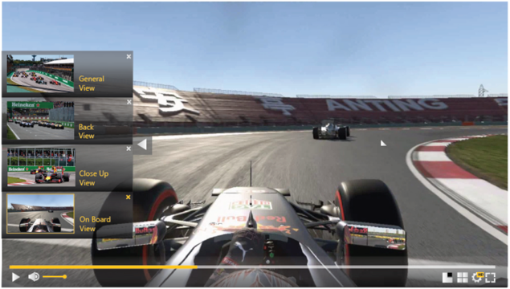
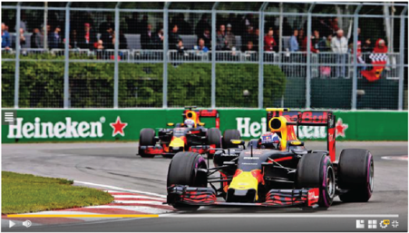
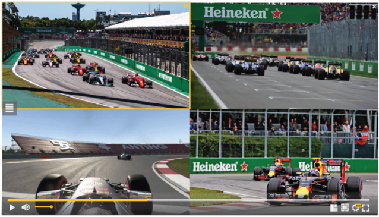
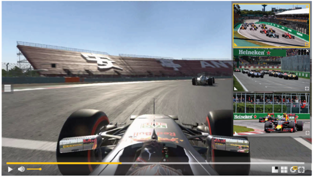

Theo Technologies probeert altijd met nieuwe producten te komen om zo de concurrent voor te zijn.
| Multi-view | Hesp |
|---|---|
verschillende beeldinvalshoeken die samenkomen in één beeld. doel = betere gebruikservaring voorbeeld:
    |
de vertraging bij live-streaming verminderen (ultra low latency < 1 sec.) doel = betere live-ervaring, vermeden spoiler-effects voorbeeld: doelpunt voetbal match geen 2 seconden later & zappen verloopt sneller. (snellere kwaliteitsverandering mogelijk) |